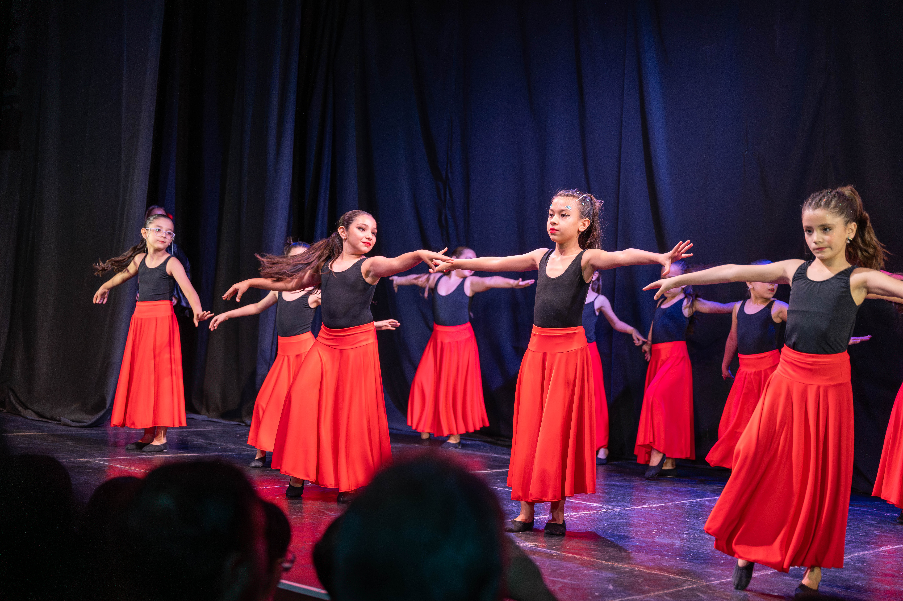
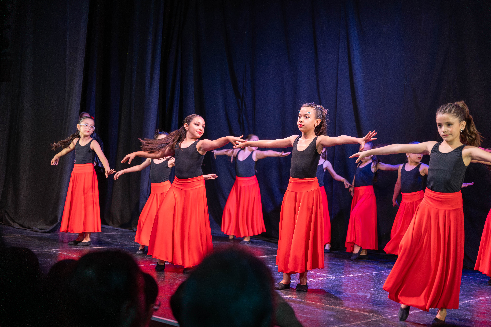
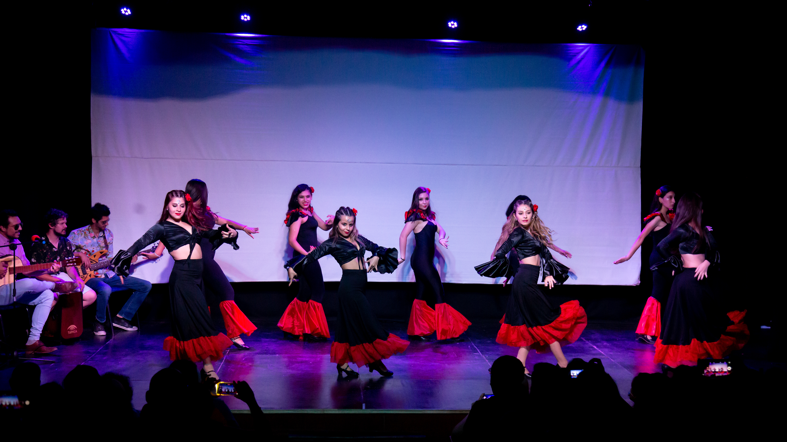
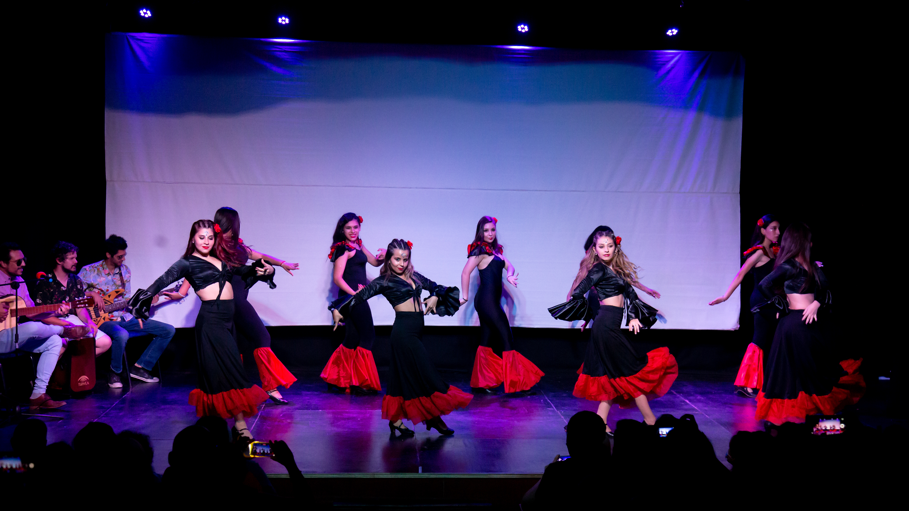
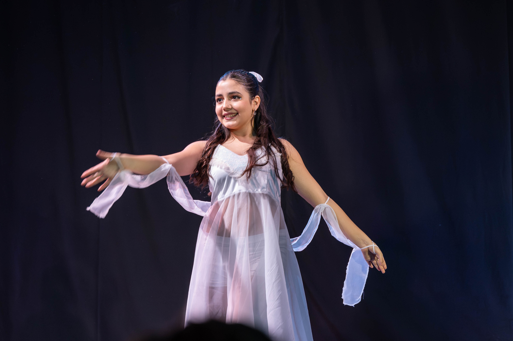
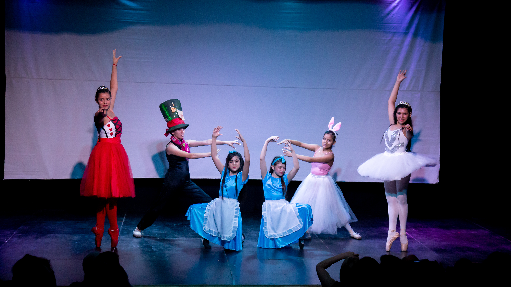
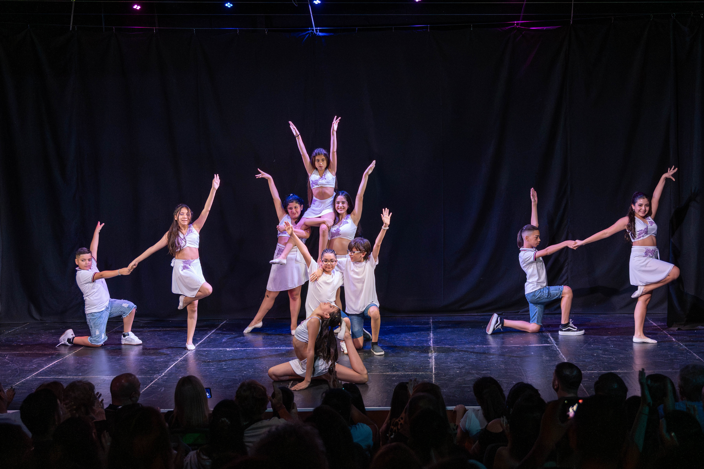
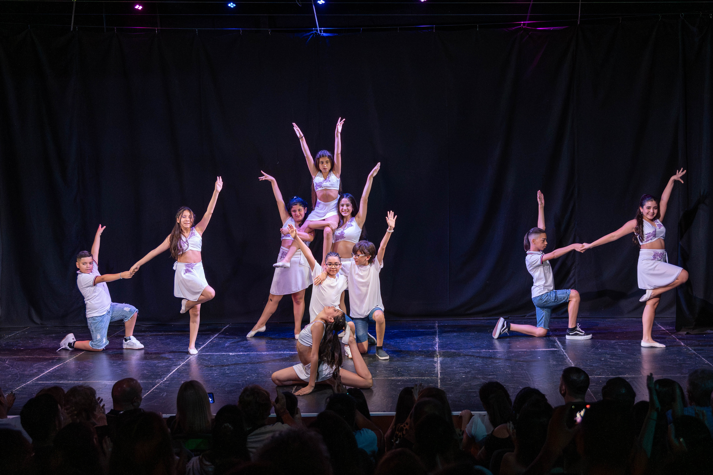

Nuestras Clases
Explora todas las propuestas que tenemos para vos
INICIACIÓN A LA DANZA (A partir de los 2 años)


Los primeros pasos en la danza nos dejan valores para toda la vida. Desde los 2 hasta los 6 años
acompañamos a los niños en un recorrido lleno de juego, creatividad y expresión, brindándoles un
abanico
de posibilidades para descubrir el movimiento.
A través de la recreación y el juego, exploramos distintos estilos como danza clásica, jazz, danza
española, ritmos latinos y urbanos. Nuestro objetivo es que cada niño desarrolle musicalidad,
coordinación y confianza, mientras conoce diferentes lenguajes de la danza para, más adelante,
elegir el
que más los cautive.
Adaptamos el ritmo y la técnica a cada edad, cuidando la postura, los movimientos y las
composiciones
coreográficas, para que disfruten la danza de forma saludable y divertida.
Horarios
- Martes y Jueves - 18:00 a 19:00
INICIACIÓN A LA DANZA (A partir de los 7 años)
 

Una propuesta pensada para niñas y niños que comienzan a profundizar en la danza a través de la
técnica clásica, el jazz y la expresión corporal. Las clases combinan entrenamiento físico,
flexibilidad y conciencia postural, siempre desde un enfoque creativo y lúdico.
El objetivo es fortalecer la base técnica mientras se fomenta la musicalidad, la coordinación y la
seguridad escénica, brindando herramientas que les permitan explorar y proyectarse en distintos
estilos de danza.
Horarios
- Martes y Jueves - 19:00 a 20:00
DANZA JAZZ


Una formación integral pensada para quienes desean profesionalizarse en la danza jazz y enseñar a
otros
con conocimiento y creatividad. El programa incluye historia y teoría de la danza jazz, desarrollo
de
técnica, diagonales, trabajo en piso y exploración de distintos estilos de jazz.
El objetivo es formar docentes capacitados, con sólida base técnica y artística, capaces de
acompañar a
sus alumnos en el aprendizaje y la expresión de este estilo dinámico y versátil.
Horarios:
- Inicial: Miércoles 19:00 a 20:00
- Intermedio: Miércoles 18:00 a 19:00
DANZA ESPAÑOLA
 

Una formación integral destinada a quienes desean profesionalizarse en la danza española y
transmitir
sus conocimientos con técnica y expresión. El programa incluye historia y teoría de la danza
española,
desarrollo de técnica en zapatos y zapatillas, y uso de elementos tradicionales como castañuelas,
mantón, abanico, silla, entre otros.
Además, se trabajan coreografías tradicionales y actuales, combinando la riqueza del repertorio
clásico
con propuestas modernas, formando docentes capaces de enseñar y proyectar la danza española con
creatividad y precisión.
Horarios
DANZA CLASICA


Una formación integral destinada a quienes desean profesionalizarse en la danza clásica y transmitir
sus
conocimientos. El programa incluye historia y teoría de la danza clásica, desarrollo de técnica en
barra
y puntas, entrenamiento de flexibilidad y creación e interpretación de coreografías.
El objetivo es formar docentes capacitados, con sólidos conocimientos técnicos y artísticos, capaces
de
enseñar y acompañar a futuras generaciones en su recorrido en la danza.
Horarios
- Lunes 19:00 a 20:00
- Miercoles 17:00 a 18:00
ZAPATEO AMERICANO


Una formación integral destinada a quienes desean profesionalizarse en el tap y enseñar con
conocimiento
y creatividad. El programa incluye historia y teoría del tap, desarrollo de técnica en zapatos y el
uso
de elementos como collar, bastón y barra.
Además, se trabajan coreografías típicas y actuales, combinando la tradición del tap con propuestas
modernas, formando docentes capaces de transmitir ritmo, musicalidad y expresión a sus futuros
alumnos.
Horaios
RITMOS URBANOS Y LATINOS
 

Un taller dinámico donde combinamos la energía de los ritmos urbanos (hip hop, break dance,
waacking,
comercial pop, reggaetón) con la alegría y sabor de los ritmos latinos (salsa, bachata, merengue,
cha
cha, entre otros).
Las clases invitan a experimentar distintos estilos, potenciar la motricidad, la expresión artística
y
la integración social, mientras descubrís todo lo que tu cuerpo puede comunicar a través del
movimiento.
Los grupos se dividen por niveles
Inicial: a partir de los 7 años.
Intermedio: a partir de los 12 años
Horarios
- Inicial: Martes y Jueves 20:00 a 21:00
- Intermedio: Lunes y Miércoles: 20:00 a 21:00